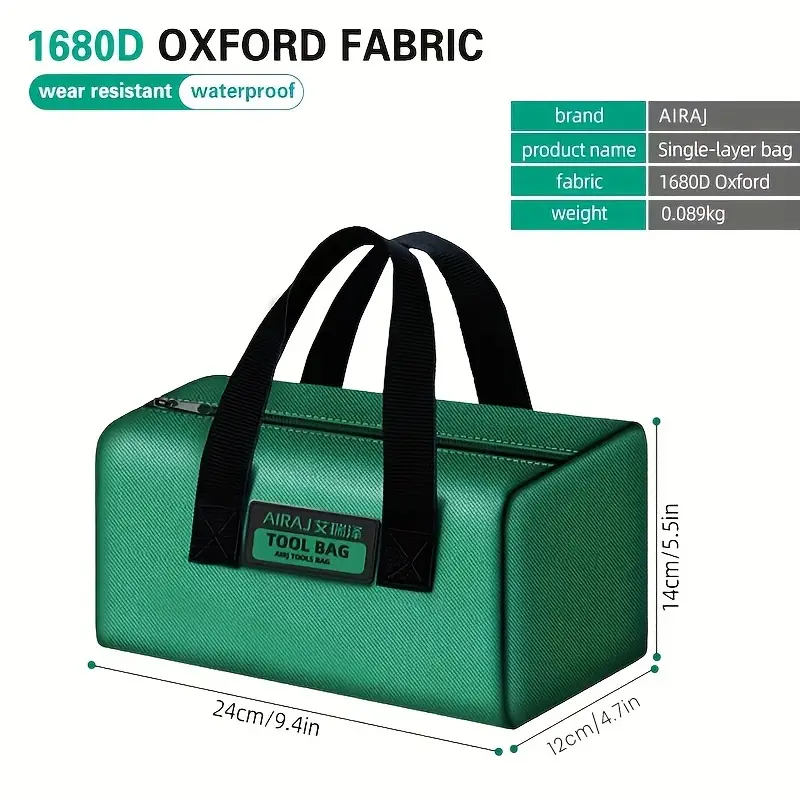
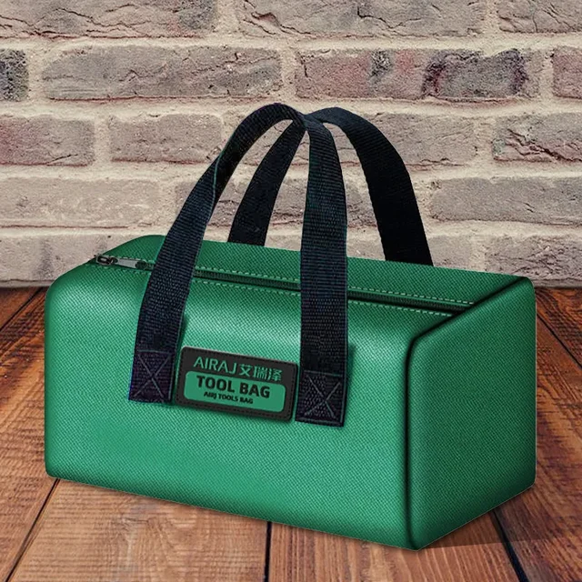
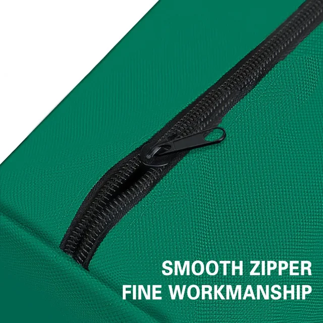
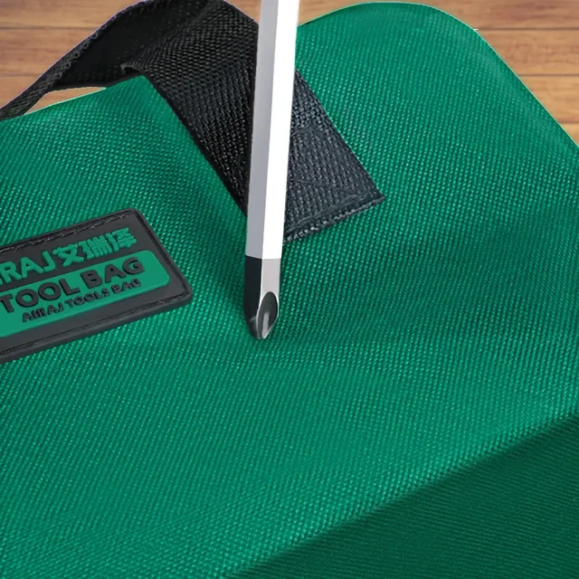
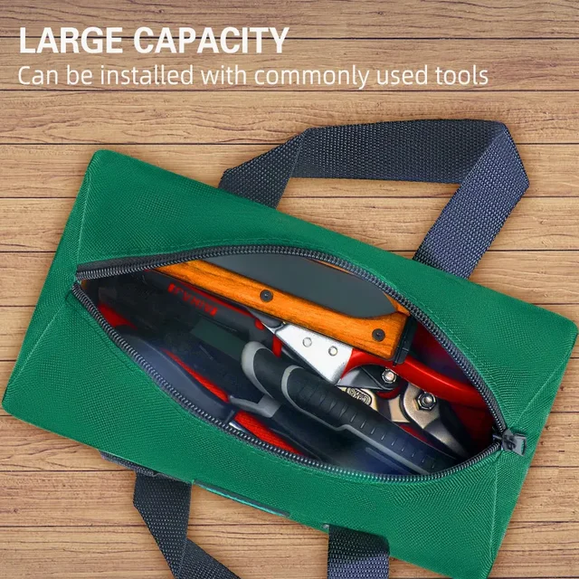

• Multifunctional Tool Bag :The AIRAJ Electrician Tool Bag is a versatile storage solution, designed to hold a variety of tools and equipment. It's perfect for electricians, carpenters, and anyone who needs a durable and portable storage solution.
• Strong and Durable Material :Made from robust Oxford cloth, this tool bag is built to last. It can withstand heavy loads and rough use, ensuring your tools are safe and secure at all times.
• Thickened Woodworking Storage :Featuring a thickened design, this tool bag provides extra storage capacity for woodworking tools. It's an ideal choice for professionals and DIY enthusiasts alike.
• Portable Handheld Design :With its handheld design, this tool bag is easy to carry around. Whether you're going to a job site or just moving around your workshop, this bag makes transportation a breeze.
• Brand Reliability :Coming from the reputable brand AIRAJ, this tool bag guarantees quality and reliability. You can trust that it will meet your storage needs now and in the future.




